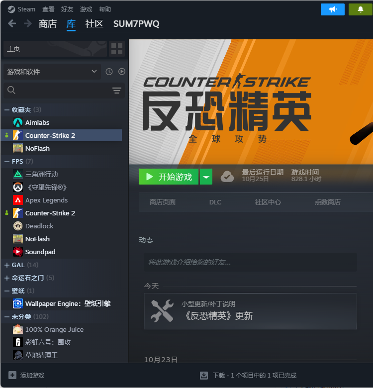

I’m studying for an MSc in Agentic AI Systems at The Hong Kong Polytechnic University. Before this, I studied Information Management & Information Systems at the Aberdeen Institute of Data Science and Artificial Intelligence, South China Normal University, and earned a second degree in Business Management & Information Systems from the University of Aberdeen.
That path made me curious about how AI systems move from an idea to something people can use. I enjoy Python analysis, clear visualizations, and practical teamwork. My internship in stock sentiment analysis and a social practice project supporting local agriculture gave me chances to explore all three.
My undergraduate studies in information systems introduced me to data, coding, and business questions. That experience led me to study Agentic AI Systems, where I want to learn how intelligent tools can be built for practical use. I enjoy working with others, trying ideas out, and making technical results easier to understand.
Information Management & Information Systems; second degree in Business Management & Information Systems from the University of Aberdeen.
◎
What I work on
Python analysis, data visualization, web applications, and the practical use of AI. I like translating a technical result into something a teammate or decision-maker can actually use.
Data analysisInformation systemsAI applicationsCommunication
OUTSIDE THE CLASSROOM
A few things that make me me.
✳
Games & esports
I play Honor of Kings, CS2, and VALORANT. I also enjoy following their competitive scenes and watching the big matches.
Honor of KingsCS2VALORANT
♫
Off-screen moments
Music and videos are my usual way to unwind after a busy day. I’m always open to a good recommendation.
I’m an ISFJ. If we share a favorite game or esports team, feel free to say hi—I’d love to chat and play together.

A snapshot from my game library CS2 / PERSONAL SCREENSHOT
02 / PROJECTS
Selected work
Work with a purpose.
Two examples of problems I’ve worked on and what I contributed.
01Social practice · 2023
Digital support for local agriculture
South China Normal University fieldwork team
Purpose — Help promote local agricultural products and support related community activities in Zijin County, Guangdong.
My contribution — Helped maintain the team’s agricultural mini program, supported updates to booking and event features, organized team spending with visualization tools, and contributed to product promotion and teaching activities.
02Internship · 2025
Stock sentiment analysis workflow
Shenzhen Institute of Big Data
Purpose — Explore how public comments and market data can be collected and visualized for stock sentiment analysis.
My contribution — Refined time-window scraping logic, iterated LLM sentiment scoring with additional parameters and examples, built scatter and violin visualizations, and documented validation and workflow steps.
03 / CONTACT
Next step
Thanks for visiting.
Let’s keep the conversation open.
If you'd like to get to know me or become friends, feel free to add me using my wechat contact ID: lql0761223. If we already know each other, please use our existing communication channel.